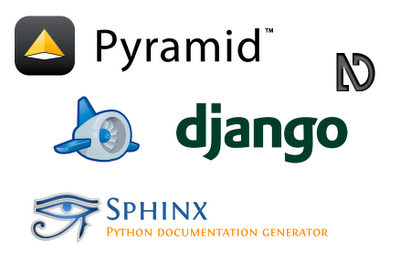

併設イベント¶

PyCon JP 2012 では各 Python 関連コミュニティによるイベントを併設します。
詳細はそれぞれの併設イベントサイト(またはページ)を参照してください。
なお、チケットは PyCon JP 2012 と共通となりますので、 参加登録 からチケットの購入をお願いします。
App Engine Conference 2012¶
- イベントサイト: App Engine Conference 2012
- 日程: 2012-09-15(土)
- 主催: Google-App-Engine-Japan
App Engine Updates - 2012¶
Python2.7 Runtime の活用方法や、App Engine の新機能についてお話しします。
| ビデオ: | |
|---|---|
| スライド: | App Engine Updates - 2012 |
| 言語: | 日本語 |
| 日時: | Sep 15 11:00-11:45 |
| 場所: | Room 357 |
Full Text Search の概要と使い方¶
試験的に公開された全文検索APIの使い方を、今後の展望などを踏まえながら解説します。
| ビデオ: | http://www.youtube.com/watch?v=VzYdkYhPMj0 |
|---|---|
| スライド: | Full Text Search の概要と使い方 |
| 言語: | 日本語 |
| 日時: | Sep 15 13:30-14:15 |
| 場所: | Room 357 |
Tetsuya Mukai¶
Python NDB APIの紹介¶
AppEngine Python用の新しいデータストアAPIであるNDBの機能や使い方について
| ビデオ: | http://www.youtube.com/watch?v=hldoRF7fZEo |
|---|---|
| スライド: | Python NDB APIの紹介 |
| 言語: | 日本語 |
| 日時: | Sep 15 14:30-15:15 |
| 場所: | Room 357 |
上田 哲広 / Tetsuhiro Ueda¶
パネルディスカッション:Google App Engine を選ぶ理由¶
本パネルディスカッションでは、実際にGoogle App Engineを使ったアプリケーション開発に携わっていらっしゃる方々に登壇いただき、「なぜGoogle App Engineのプラットフォームを選択したのか？」、「Google App Engineによって開発がどう変わったか(PaaSとは何か)」と「Google App Engineに向いてるアプリケーションと向いてないアプリケーション」について、これまでの経験談を中心に語って頂きます。 このパネルディスカッションを通じて、参加者の皆様にGoogle App Engineのリアル(いいところ、悪いところ)を知ってもらえればと思います。
| ビデオ: | http://www.youtube.com/watch?v=fWUuR65O958 |
|---|---|
| スライド: | パネルディスカッション:Google App Engine を選ぶ理由 |
| 言語: | 日本語 |
| 日時: | Sep 15 15:30-16:15 |
| 場所: | Room 357 |
Moderator: 楠元 朗 / Akira Kusumoto¶
Panelist:
- 松尾 貴史 / Takashi Matsuo
- najeira
- Shinichi Ogawa
- Kenji Ishii
Django & Pyramid Con JP 2012¶
- djangoproject.jp イベントページ: Django & Pyramid Con JP 2012 (django)
- Pylons Project JP イベントページ: Django & Pyramid Con JP 2012 (pylons)
- 日程: 2012-09-15(土)-16(日)
- 主催: djangoproject.jp 、 Pylons Project JP
使える Django 1.4¶
Djangoについて
- 1.0 以降の新しいこと
- クラスベース汎用ビュー
- app template (django-skel)
| ビデオ: | http://www.youtube.com/watch?v=mztNbPjeXe0 |
|---|---|
| スライド: | 使えるDjango1.4 |
| 言語: | 日本語 |
| 日時: | Sep 15 11:00-11:45 |
| 場所: | Room 452 |
清原 弘貴 / Hiroki Kiyohara¶
What Makes Pyramid Unique!¶
Pyramidについて Pyramidの特徴 PyramidのためのPythonの知識
| ビデオ: | http://www.youtube.com/watch?v=ZM59E3G7Amc |
|---|---|
| スライド: | What Makes Pyramid Unique! |
| 言語: | 日本語 |
| 日時: | Sep 15 13:30-14:15 |
| 場所: | Room 452 |
小田切 篤 / Atsushi Odagiri¶
Djangoを活用したM2Mクラウドプラットフォーム¶
Djangoを利用したM2Mサーバの実例について紹介
| ビデオ: | http://www.youtube.com/watch?v=m8xM4n7kGVA |
|---|---|
| スライド: | |
| 言語: | 日本語 |
| 日時: | Sep 15 14:30-15:15 |
| 場所: | Room 452 |
松村 竜之介 / Ryunosuke Matsumura¶
Pyramidセキュリティ¶
- Pyramidセキュリティ
| ビデオ: | http://www.youtube.com/watch?v=OTVvH1qx7bM |
|---|---|
| スライド: | Pyramid Security |
| 言語: | 日本語 |
| 日時: | Sep 15 15:30-16:15 |
| 場所: | Room 452 |
村岡 友介 / Yusuke Muraoka¶
Django-Celeryで非同期処理¶
Celeryを使ったリアルタイム処理について紹介。 事例を通した具体的な話も
| ビデオ: | http://www.youtube.com/watch?v=Rv-EJaoizpA |
|---|---|
| スライド: | Django-Celeryで非同期処理 |
| 言語: | 日本語 |
| 日時: | Sep 15 16:30-17:15 |
| 場所: | Room 452 |
奈良 英樹 / Hideki Nara¶
Pylons ユーザのための Pyramid 移行ガイド¶
これまで Pylons を使っていた人が Pyramid に移行する際に知っておくべきことを紹介
| ビデオ: | http://www.youtube.com/watch?v=31hrBjeU5sk |
|---|---|
| スライド: | Pylons ユーザのための Pyramid 移行ガイド |
| 言語: | 日本語 |
| 日時: | Sep 16 10:00-10:45 |
| 場所: | Room 452 |
Nozomu Kaneko¶
Django Lessons Learned @BeProud¶
3年以上Djangoを使って開発をしてきたBeProudで、 経験したこと、勉強になったことを共有
| ビデオ: | http://www.youtube.com/watch?v=zxBfTGgNdA8 |
|---|---|
| スライド: | Django Lessons Learned @BeProud |
| 言語: | 日本語 |
| 日時: | Sep 16 11:00-11:45 |
| 場所: | Room 452 |
イアン ルイス / Ian Lewis¶
Ian はBeProudに所属する Python エンジニア。ウェブ、ネットワーク、いわゆるNoSQL DBに興味あり。現在は connpass.com を作っています。
SphinxCon JP 2012¶
- イベントページ: SphinxCon JP 2012
- 日程: 2012-09-16(日)
- 主催: Sphinx-Users.jp
Sphinx ではじめるドキュメント生活 2012¶
すぐれたドキュメントツールである Sphinx を使って、あなたのドキュメントを書いてみませんか。 Sphinx は多くの OSS のマニュアル、リファレンスで採用されている他、 IT企業でも利用されはじめています。 ドキュメントを作りたくなってしまうとまで言われる Sphinx の魅力を皆さんにご紹介します。
| ビデオ: | http://www.youtube.com/watch?v=YRa-eN9Chy0 |
|---|---|
| スライド: | Sphinx ではじめるドキュメント生活 2012 |
| 言語: | 日本語 |
| 日時: | Sep 16 15:15-15:40 |
| 場所: | Room 452 |
小宮 健 / Takeshi Komiya¶
(株)タイムインターメディア所属
blockdiag、Sphinx などといったドキュメンテーションツールに興味を持ち、 ツール、拡張モジュールの開発やコミュニティ活動を行なっている。
Sphinx拡張 探訪¶
Sphinxの魅力の一つに多種多様な拡張があります。多くの人がさまざまな目的で開発したSphinx拡張を紹介し、Sphinxがいろいろなニーズに答えられることを伝えます。
| ビデオ: | |
|---|---|
| スライド: | Sphinx拡張 探訪 |
| 言語: | 日本語 |
| 日時: | Sep 16 15:40-16:05 |
| 場所: | Room 452 |
Sphinx HTML theme 事始め¶
Sphinx には組み込みで複数のHTMLテーマが付属しており、defaultのテーマも用意されたパラメータに値を指定すれば、印象をガラリと変えることが可能になります。 今回はSphinxのHTMLテーマの基本的な構成に触れながら、組み込みのテーマでできること、組み込みのHTMLテーマからのもうひと工夫の仕方を軸に、自分が考えるSphinxテーマカスタマイズ手法を紹介したいと思います。
| ビデオ: | http://www.youtube.com/watch?v=Po4yAQQ2qLc |
|---|---|
| スライド: | Sphinx HTML theme 事始め |
| 言語: | 日本語 |
| 日時: | Sep 16 16:45-17:10 |
| 場所: | Room 452 |
Sphinxを使って本を書こう¶
私の過去2冊の翻訳・執筆した本の経験から、Sphinxを活用して執筆環境を自動化したときの手順とそのメリットなどを紹介します。
| ビデオ: | http://www.youtube.com/watch?v=7VOJpFHnPWg |
|---|---|
| スライド: | Sphinxを使って本を書こう |
| 言語: | 日本語 |
| 日時: | Sep 16 17:10-17:35 |
| 場所: | Room 452 |
清水川 貴之 / Takayuki Shimizukawa¶
BeProud所属。Sphinx-users.jp 副会長。訳書・著書「エキスパートPythonプログラミング」「Pythonプロフェッショナルプログラミング」。
Sphinxの平凡な使い方 ～業務での利用事例～¶
ターゲットは、Sphinxに興味はあるけど、まだ使ったことが無い人です。
| ビデオ: | http://www.youtube.com/watch?v=SoehUIC3RKc |
|---|---|
| スライド: | Sphinxの平凡な使い方 ～業務での利用事例～ |
| 言語: | 日本語 |
| 日時: | Sep 16 17:45-18:00 |
| 場所: | Room 452 |
社内でのSphinx、reSTの広め方¶
自分以外誰も Sphinx, reStructuredText を使ったことがない状況で、8名ほどのチームメンバーが全員が普通に使用するようになるまでの物語。
| ビデオ: | http://www.youtube.com/watch?v=vKuhuxcCxM0 |
|---|---|
| スライド: | How to spread reST and Sphinx |
| 言語: | 日本語 |
| 日時: | Sep 16 18:00-18:15 |
| 場所: | Room 452 |
Sphinxにおけるdocutilsの役割¶
docutilsがreStructuredTextを処理する流れについて docutilsの使い方の概要
| ビデオ: | http://www.youtube.com/watch?v=kiUMwzTjMGY |
|---|---|
| スライド: | Sphinxにおけるdocutilsの役割 |
| 言語: | 日本語 |
| 日時: | Sep 16 18:15-18:30 |
| 場所: | Room 452 |
NVDA Workshop in Japan¶
- サイト: NVDA Workshop in Japan
- 日本語ページ: NVDA Workshop in Japan 開催のお知らせ
- 日程: 2012-09-16(日)
- 主催: NVDA Japanese Team
NVDA: Open Source Screen Reader Written in Python¶
This talk overviews the development of NonVisual Desktop Access (NVDA). NVDA is a free and open source screen reader for the Microsoft Windows operating system. NVDA is written primarily in the Python programming language. The speaker will explain what are the difficulties in programming screen reader, what is the benefits of using Python language, and in what ways NVDA is being developed.
| ビデオ: | http://www.youtube.com/watch?v=BaRjKXvhJdo |
|---|---|
| スライド: | NVDA: Open Source Screen Reader Written in Python |
| 言語: | 英語 |
| 日時: | Sep 16 15:15-16:00 |
| 場所: | Room 358 |
The Development and Promotion of NVDA in Taiwan¶
Taiwan Digital Talking Books Association (TDTB) is supporting development of NVDA for Chinese language users. This talk overviews how NVDA is used in Taiwan.
| ビデオ: | http://www.youtube.com/watch?v=61FYUfh0J10 |
|---|---|
| スライド: | The Development and Promotion of NVDA in Taiwan |
| 言語: | 英語 |
| 日時: | Sep 16 16:45-17:10 |
| 場所: | Room 358 |
The Localization of NVDA for Japanese Language Users¶
日本では2010年からNVDA日本語版(nvdajp)を開発・公開してきました。主な特長は、日本語の音声合成エンジンの追加、かな漢字変換の読み上げ、点字ディスプレイへの対応などです。 この講演では、日本語のスクリーンリーダーに必要な機能の概要と、NVDA日本語チームによる開発の現状を紹介します。
In Japan, localized version of NVDA, which supports Japanese text-to-speech synthesizer, input method support, and Japanese braille display support, has been developed since 2010. This talk overviews the features necessary for Japanese screen reader, and the development of NVDAJP.
| ビデオ: | http://www.youtube.com/watch?v=HYQaX_xuKJQ |
|---|---|
| スライド: | The Localization of NVDA for Japanese Language Users |
| 言語: | 日本語 |
| 日時: | Sep 16 17:10-17:35 |
| 場所: | Room 358 |
Development of Global Open Standard for Developing Countries¶
Digital Accessible Information SYstem (DAISY) は読書が困難な人々を支援する技術です。DAISY コンソーシアムは国際標準規格DAISYの開発、保守、普及を行なう非営利の国際組織です。この講演では河村氏にDAISYプロジェクトの経緯、そして、 インクルーシブな社会発展のために NVDA のようなオープンソース技術、オープンスタンダード技術がどのように貢献できるかをお話いただきます。
Digital Accessible Information SYstem (DAISY) assists people who have challenges using regular printed media. DAISY Consortium is a not-for-profit international association that develops, maintains and promotes DAISY standards. This talk gives the history of DAISY project, potential roles in global development of inclusive societies, and what is expected of the NVDA community from this point of view.
| ビデオ: | http://www.youtube.com/watch?v=7oUq3rfjgHY |
|---|---|
| スライド: | Development of Global Open Standard for Developing Countries |
| 言語: | 日本語 |
| 日時: | Sep 16 17:45-18:30 |
| 場所: | Room 358 |
河村 宏 / Hiroshi Kawamura¶
DAISY コンソーシアム 前代表 / Board (Past President), DAISY Consortium 特定非営利活動法人 支援技術開発機構（ATDO）副理事長 / Vice President, Assistive Technology Development Organization